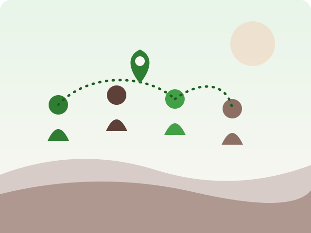

Localize
Filtre projetos sociais pelo seu estado, cidade e bairro. Só o que é perto de você aparece primeiro.
O LocalizaFavela aproxima cidadãos de projetos sociais e ONGs do seu estado, cidade e bairro — com inscrição simples, processo seletivo justo e contato direto.

acreditamos que a periferia não é carência — é potência.
que voluntariado é mão estendida dos dois lados;
que informação na distância do seu bairro
muda destinos;
e que reduzir desigualdades começa
quando alguém localiza a chance
onde ela sempre esteve: na favela.
Metas da primeira fase de implantação na região metropolitana.
Filtre projetos sociais pelo seu estado, cidade e bairro. Só o que é perto de você aparece primeiro.
Preencha o formulário dinâmico da ONG em minutos. Suas respostas vão direto para o processo seletivo.
Aprovado? A ONG te chama no WhatsApp ou e-mail para começar. Rejeitado? Você recebe um parecer honesto.